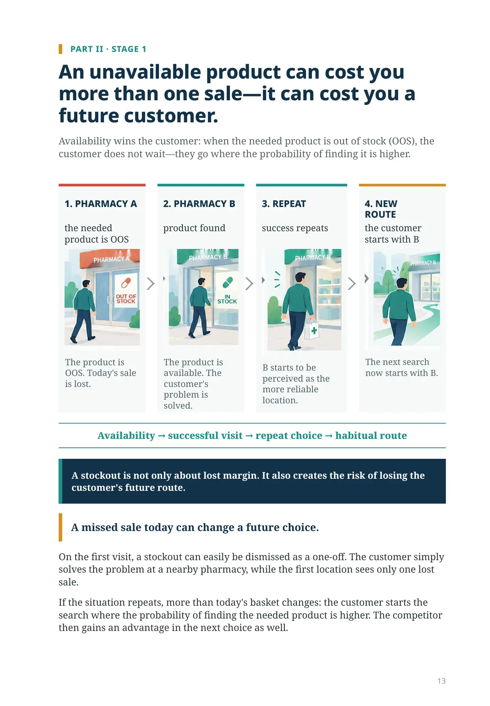
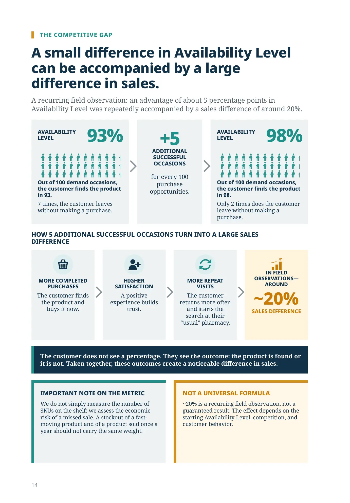
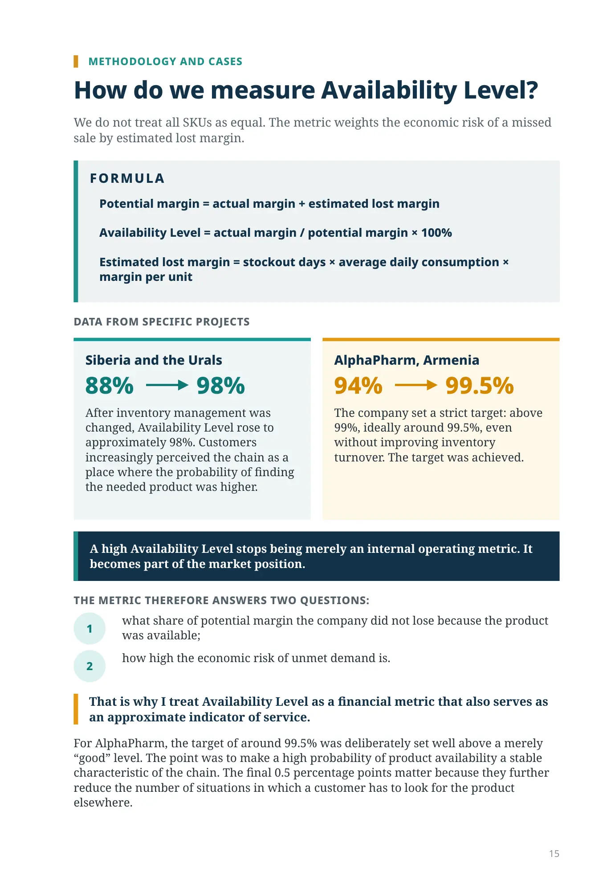
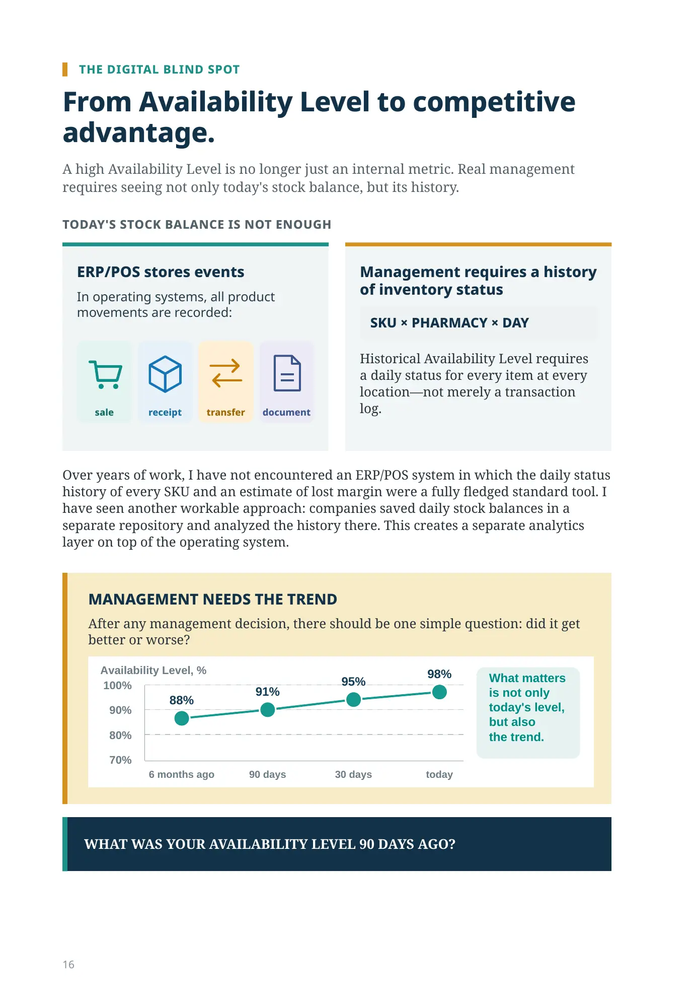
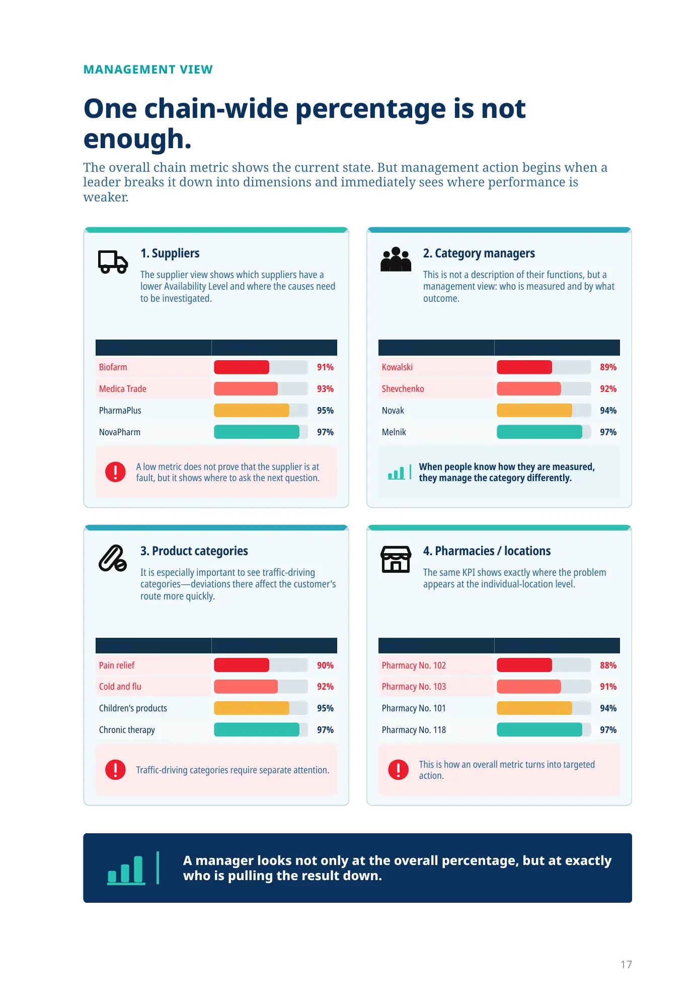
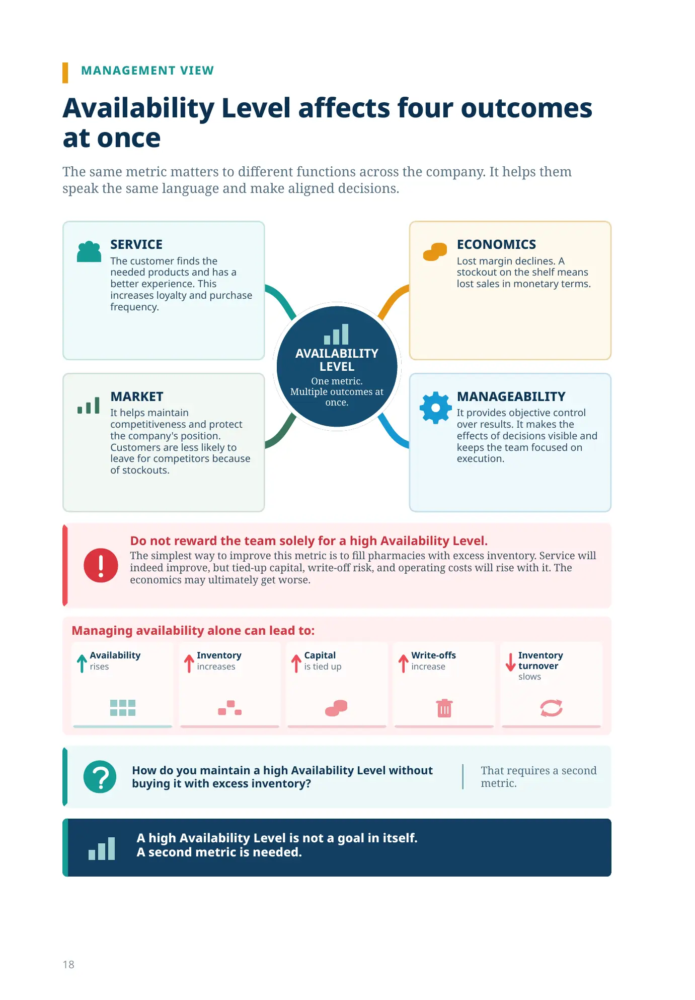

Availability wins the customer
PART II · STAGE 1
An unavailable product can cost you more than one sale—it can cost you a future customer.
Availability wins the customer: when the needed product is out of stock (OOS), the customer does not wait—they go where the probability of finding it is higher.
1. PHARMACY A
the needed product is OOS
The product is OOS. Today's sale is lost.
2. PHARMACY B
product found
The product is available. The customer's problem is solved.
3. REPEAT
success repeats
B starts to be perceived as the more reliable location.
4. NEW ROUTE
the customer starts with B
The next search now starts with B.
Availability → successful visit → repeat choice → habitual route
A stockout is not only about lost margin. It also creates the risk of losing the customer's future route.
A missed sale today can change a future choice.
On the first visit, a stockout can easily be dismissed as a one-off. The customer simply solves the problem at a nearby pharmacy, while the first location sees only one lost sale.
If the situation repeats, more than today's basket changes: the customer starts the search where the probability of finding the needed product is higher. The competitor then gains an advantage in the next choice as well.
THE COMPETITIVE GAP
A small difference in Availability Level can be accompanied by a large difference in sales.
A recurring field observation: an advantage of about 5 percentage points in Availability Level was repeatedly accompanied by a sales difference of around 20%.
AVAILABILITY LEVEL
93%
Out of 100 demand occasions, the customer finds the product in 93.
7 times, the customer leaves without making a purchase.
+5 ADDITIONAL SUCCESSFUL OCCASIONS
for every 100 purchase opportunities.
AVAILABILITY LEVEL
98%
Out of 100 demand occasions, the customer finds the product in 98.
Only 2 times does the customer leave without making a purchase.
HOW 5 ADDITIONAL SUCCESSFUL OCCASIONS TURN INTO A LARGE SALES DIFFERENCE
MORE COMPLETED PURCHASES
The customer finds the product and buys it now.
HIGHER SATISFACTION
A positive experience builds trust.
MORE REPEAT VISITS
The customer returns more often and starts the search at their “usual” pharmacy.
IN FIELD OBSERVATIONS—AROUND
~20%
SALES DIFFERENCE
The customer does not see a percentage. They see the outcome: the product is found or it is not. Taken together, these outcomes create a noticeable difference in sales.
IMPORTANT NOTE ON THE METRIC
We do not simply measure the number of SKUs on the shelf; we assess the economic risk of a missed sale. A stockout of a fast-moving product and of a product sold once a year should not carry the same weight.
NOT A UNIVERSAL FORMULA
~20% is a recurring field observation, not a guaranteed result. The effect depends on the starting Availability Level, competition, and customer behavior.
METHODOLOGY AND CASES
How do we measure Availability Level?
We do not treat all SKUs as equal. The metric weights the economic risk of a missed sale by estimated lost margin.
FORMULA
Potential margin = actual margin + estimated lost margin
Availability Level = actual margin / potential margin × 100%
Estimated lost margin = stockout days × average daily consumption × margin per unit
DATA FROM SPECIFIC PROJECTS
Siberia and the Urals
Siberia and the Urals: 88% → 98%
After inventory management was changed, Availability Level rose to approximately 98%. Customers increasingly perceived the chain as a place where the probability of finding the needed product was higher.
AlphaPharm, Armenia
94% → 99.5%
The company set a strict target: above 99%, ideally around 99.5%, even without improving inventory turnover. The target was achieved.
A high Availability Level stops being merely an internal operating metric. It becomes part of the market position.
THE METRIC THEREFORE ANSWERS TWO QUESTIONS:
- what share of potential margin the company did not lose because the product was available;
- how high the economic risk of unmet demand is.
That is why I treat Availability Level as a financial metric that also serves as an approximate indicator of service.
For AlphaPharm, the target of around 99.5% was deliberately set well above a merely “good” level. The point was to make a high probability of product availability a stable characteristic of the chain. The final 0.5 percentage points matter because they further reduce the number of situations in which a customer has to look for the product elsewhere.
THE DIGITAL BLIND SPOT
From Availability Level to competitive advantage.
A high Availability Level is no longer just an internal metric. Real management requires seeing not only today's stock balance, but its history.
TODAY'S STOCK BALANCE IS NOT ENOUGH
ERP/POS stores events
- sale
- receipt
- transfer
- document
Management requires a history of inventory status
SKU × PHARMACY × DAY
Historical Availability Level requires a daily status for every item at every location—not merely a transaction log.
Over years of work, I have not encountered an ERP/POS system in which the daily status history of every SKU and an estimate of lost margin were a fully fledged standard tool. I have seen another workable approach: companies saved daily stock balances in a separate repository and analyzed the history there. This creates a separate analytics layer on top of the operating system.
MANAGEMENT NEEDS THE TREND
After any management decision, there should be one simple question: did it get better or worse?
6 months → 90 days → 30 days → today
WHAT WAS YOUR AVAILABILITY LEVEL 90 DAYS AGO?
MANAGEMENT VIEW
One chain-wide percentage is not enough.
The overall chain metric shows the current state. But management action begins when a leader breaks it down into dimensions and immediately sees where performance is weaker.
1. Suppliers
The supplier view shows which suppliers have a lower Availability Level and where the causes need to be investigated.
| Supplier | Availability Level |
|---|---|
| Biofarm | 91% |
| Medica Trade | 93% |
| PharmaPlus | 95% |
| NovaPharm | 97% |
A low metric does not prove that the supplier is at fault, but it shows where to ask the next question.
2. Category managers
This is not a description of their functions, but a management view: who is measured and by what outcome.
| Manager | Availability Level |
|---|---|
| Kowalski | 89% |
| Shevchenko | 92% |
| Novak | 94% |
| Melnik | 97% |
When people know how they are measured, they manage the category differently.
3. Product categories
It is especially important to see traffic-driving categories—deviations there affect the customer's route more quickly.
| Category | Availability Level |
|---|---|
| Pain relief | 90% |
| Cold and flu | 92% |
| Children's products | 95% |
| Chronic therapy | 97% |
Traffic-driving categories require separate attention.
4. Pharmacies / locations
The same KPI shows exactly where the problem appears at the individual-location level.
| Pharmacy | Availability Level |
|---|---|
| Pharmacy No. 102 | 88% |
| Pharmacy No. 103 | 91% |
| Pharmacy No. 101 | 94% |
| Pharmacy No. 118 | 97% |
This is how an overall metric turns into targeted action.
A manager looks not only at the overall percentage, but at exactly who is pulling the result down.
Availability Level affects four outcomes at once
The same metric matters to different functions across the company. It helps them speak the same language and make aligned decisions.
SERVICE
The customer finds the needed products and has a better experience. This increases loyalty and purchase frequency.
ECONOMICS
Lost margin declines. A stockout on the shelf means lost sales in monetary terms.
LEVELOne metric.
Multiple outcomes at once.
MARKET
It helps maintain competitiveness and protect the company's position. Customers are less likely to leave for competitors because of stockouts.
MANAGEABILITY
It provides objective control over results. It makes the effects of decisions visible and keeps the team focused on execution.
The simplest way to improve this metric is to fill pharmacies with excess inventory. Service will indeed improve, but tied-up capital, write-off risk, and operating costs will rise with it. The economics may ultimately get worse.
Managing availability alone can lead to:
A high Availability Level is not a goal in itself.
A second metric is needed.